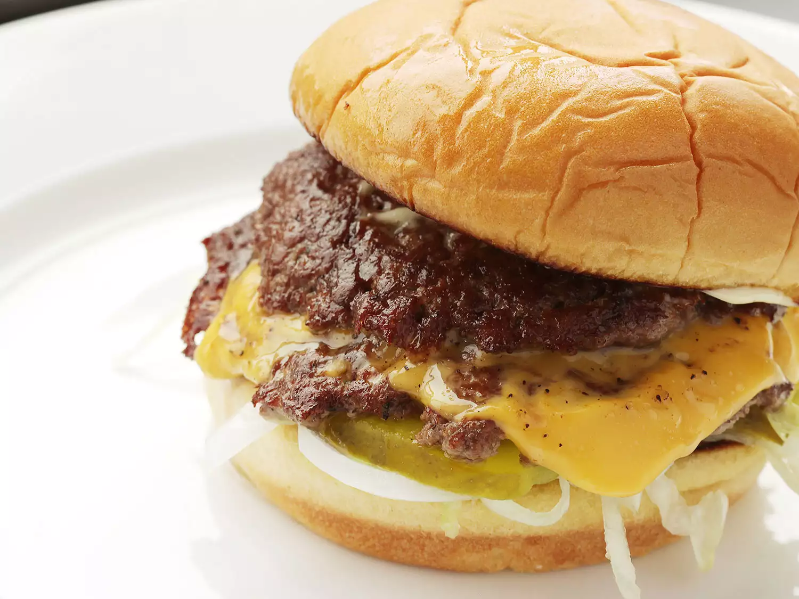

Smash Burger

Description
By now we all know that the old piece of burger wisdom "never press on your burger!" is either patently false or, at the very least, wildly inaccurate. Heck, there's an entire successful burger chain devoted to using the technique. While a more traditional griddled burger might be cooked with the goal of a loose, tender texture in mind, a smash burger goes for one thing only: maximum crust.
Ingredients
- 1 soft hamburger roll, buttered and toasted
- Condiments and toppings as desired, such as mayonnaise, mustard, shredded lettuce, onions, tomatoes, and pickles
- 4 oz. freshly ground beef chuck, divided into two 2-oz balls
- Kosher salt and freshly ground black pepper
- 1 slice good melting cheese, such as American or cheddar
Steps
- Prepare burger bun by laying toppings on bottom half of bun. Have it nearby and ready for when your burger is cooked.
- Preheat a large stainless steel sauté pan or skillet over high heat for 2 minutes. Place balls of beef in pan and smash down with a stiff metal spatula, using a second spatula to add pressure. Smashed patties should be slightly wider than burger bun.
- Season generously with salt and pepper and allow to cook until patties are well browned and tops are beginning to turn pale pink/gray in spots, about 45 seconds. Using a bench scraper or the back side of a stiff metal spatula, carefully scrape patties from pan, making sure to get all of the browned bits.
- Flip patties and immediately place a slice of cheese over 1 patty, then stack the second directly on top. Immediately remove from pan and transfer to waiting burger bun. Serve.
Sources